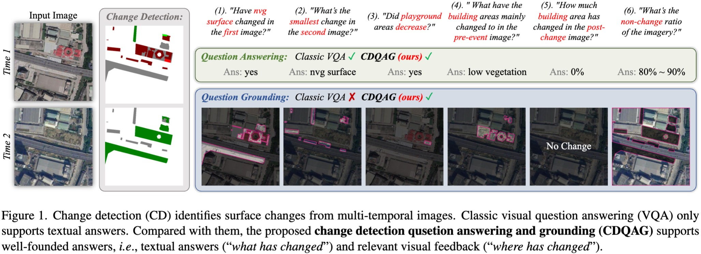

Biography
|
Di Wang is currently a Associate Professor at Xidian University. Her primary research areas include machine learning, information retrieval, and computer vision. Her research findings have been published in prestigious international journals such as IEEE TPAMI, TIP, TMM, TCYB, TCSVT, and PR, as well as leading international conferences such as CVPR, SIGIR, IJCAI, MM, and AAAI. She has received the Outstanding Ph.D. Dissertation Award from the China Society of Image and Graphics and the Second Prize for Scientific and Technological Progress from the China Institute of Electronics. She has led projects funded by the National Natural Science Foundation of China (General and Youth Programs), the China Postdoctoral Science Foundation (Special and General Grants), the Shaanxi Provincial Key R&D Program, and the Shaanxi Provincial Natural Science Basic Research Program.
|
News
- [02, 2025] Several papers accepted, 1
CVPR 2025 ,Information Fusion . - [01, 2025] Several papers accepted, 1
PR , 1IEEE IoTJ , 1PRL . - [12, 2024] 1 papers accepted to
AAAI 2025 . - [11, 2024] 1 papers accepted to
IEEE TIFS . - [10, 2024] 1 papers accepted to
MICCAI 2024 . - [09, 2024] 1 papers accepted to
IEEE TMM . - [08, 2024] Several papers accepted, 1
NN , 1IEEE TMM . - [07, 2024] Several papers accepted, 1
ACM MM 2024 , 1IEEE TGRS , 1PR , 3IGARSS 2024 . - [06, 2024] Several papers accepted, 1
CVPR 2024 , 1IPM , 1ICMR 2024 , 1Neurocomputing . - [05, 2024] 1 papers accepted to
COLING 2024 . - [04, 2024] Several papers accepted, 1
ICASSP 2024 , 1IEEE GRSL . - [03, 2024] Several papers accepted, 3
AAAI 2024 , 1IEEE JSTARS . - [02, 2024] 1 papers accepted to
ESWA . - [12, 2023] 1 papers accepted to
Neurocomputing . - [10, 2024] Several papers accepted, 1
ACM MM 2023 , 1IEEE TMM , 1PRCV 2023 . - [09, 2023] 1 papers accepted to
Neurocomputing . - [08, 2023] Several papers accepted, 1
IEEE TGRS , 1PR . - [07, 2023] Several papers accepted, 1
ACM SIGIR 2023 , 1IEEE TNNLS . - [03, 2023] 1 paper accepted to
PR . - [12, 2022] 1 paper accepted to
PR . - [06, 2022] 1 paper accepted to
IEEE TMM . - [01, 2022] 1 paper accepted to
IEEE TMM . - [08, 2021] 1 paper accepted to
ICIP 2021 . - [02, 2021] 1 paper accepted to
IEEE TCYB . - [05, 2020] 1 paper accepted to
ACM SIGIR 2020 . - [05, 2020] 1 paper accepted to
PR . - [09, 2018] 1 paper accepted to
PRL . - [07, 2018] 1 paper accepted to
IEEE TPAMI . - [07, 2017] 1 paper accepted to
IEEE TCSVT . - [01, 2016] 1 paper accepted to
Neurocomputing . - [07, 2016] 1 paper accepted to
IEEE TIP . - [07, 2015] 1 paper accepted to
IJCAI 2015 . - [04, 2015] 1 paper accepted to
Neurocomputing . - [04, 2015] 1 paper accepted to
IEEE TCYB .
Selected Publications [Google Scholar]
 |
FD2-Net: Frequency-Driven Feature Decomposition Network for Infrared-Visible Object DetectionKe Li, Di Wang, Shaofeng Li, Weiping Ni, Lin Zhao, Quan Wang AAAI Conference on Artificial Intelligence (AAAI), 2025. |
|  |
Show Me What and Where has Changed? Question Answering and Grounding for Remote Sensing Change DetectionKe Li, Fuyu Dong, Di Wang, Shaofeng Li, Quan Wang, Xinbo Gao, Tat-Seng Chua arXiv, 2024. A new benchmark dataset of CDQAG: 🔥Project Page🔥 |
 |
Unleashing Channel Potential: Space-Frequency Selection Convolution for SAR Object DetectionKe Li, Di Wang, Zhangyuan Hu, Wenxuan Zhu, Shaofeng Li, Quan Wang IEEE/CVF Conference on Computer Vision and Pattern Recognition (CVPR), 2024. The first special convolution for SAR object detection: 🔥Project Page🔥 |
Divide and Conquer: Isolating Normal-Abnormal Attributes in Knowledge Graph-Enhanced Radiology Report GenerationXiao Liang, Yanlei Zhang, Di Wang, Haodi Zhong, Ronghan Li, Quan Wang ACM International Conference on Multimedia (MM), 2024. |
|
Language-Guided Progressive Attention for Visual Grounding in Remote Sensing ImagesKe Li, Di Wang, Haojie Xu, Haodi Zhong, Cong Wang IEEE Transactions on Geoscience and Remote Sensing (TGRS), 2024. A new benchmark dataset of RSVG: 🔥Project Page🔥 |
|
Language-Guided Visual Aggregation Network for Video Question AnsweringXiao Liang, Di Wang, Quan Wang, Bo Wan, Lingling An, Lihuo He ACM International Conference on Multimedia (MM), 2023. 🔥Project Page🔥 |
|
Online Collective Matrix Factorization Hashing for Large-Scale Cross-Media RetrievalDi Wang, Quan Wang, Yaqaing An, Xinbo Gao, Yumin Tian ACM SIGIR Conference on Research and Development in Information Retrieval (SIGIR), 2020. |
|
Label Consistent Matrix Factorization Hashing for Large-Scale Cross-Modal Similarity SearchDi Wang, Xinbo Gao, Xiumei Wang, Lihuo He IEEE Transactions on Pattern Analysis and Machine Intelligence (TPAMI), 2018. |
|
Multimodal Discriminative Binary Embedding for Large-Scale Cross-Modal RetrievalDi Wang, Xinbo Gao, Xiumei Wang, Lihuo He, Bo Yuan IEEE Transactions on Image Processing (TIP), 2016. |
|
Semantic Topic Multimodal Hashing for Cross-Media RetrievalDi Wang, Xinbo Gao, Xiumei Wang, Lihuo He International Joint Conference on Artificial Intelligence (IJCAI), 2015. |
Activities
- Conference Reviewer: CVPR, ICCV, ECCV, NeurIPS, ICLR, AAAI, MM, etc.
- Journal Reviewer: TPAMI, TIP, TNNLS, TMM, TGRS, TCSVT, PR, NN, TKDE, Neurocomputing, etc.